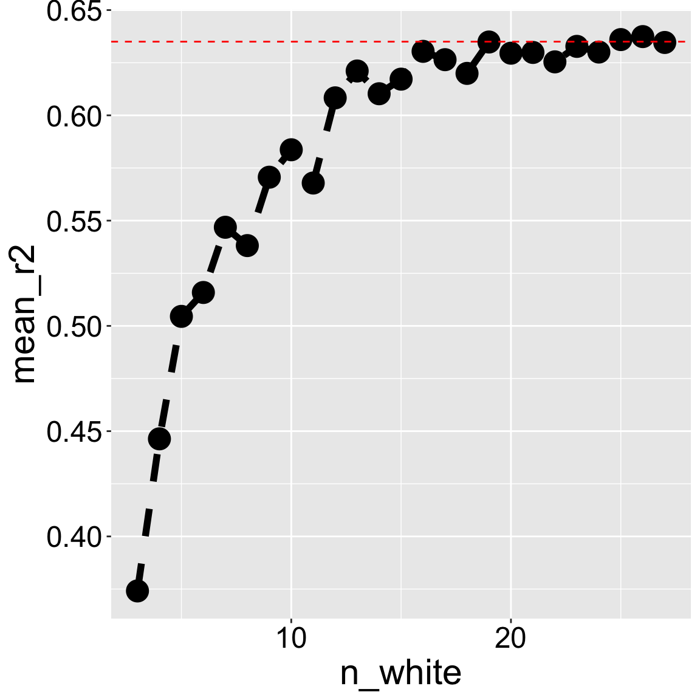

# Data already filtered to be from squirrel mountain
sm_lm <- lm(admix_proportion ~ petal_color, data = clarkia_hz)• 18. F Calculations
Motivating Scenario: We get the theory of partitioning variance but now let’s go ahead and do it!
Learning Goals: By the end of this subchapter, you should be able to:
Explain how total variation can be broken down into variation explained by a model and error variation.
Define and calculate sums of squares (SS) for model, error, and total.
Calculate the degrees of freedom for the model and error terms, and use them to calculate Mean Squares.
Interpret the ratio of mean squares as an F statistic, connect F to the idea of taking multiple samples from the null, and using this to conduct NHST.
Let’s look at the association between admixture proportion of natural parviflora plants in the SR hybrid zone, and petal color. The motivating idea is – if white petals do not attract pollinators (as seen in the previous chapter), white plants will have had less admixture (because they would not receive xantiana pollen).
Visualizing components of variation
Code
library(broom)
library(patchwork)
library(tidyverse)
# ---- Load & prepare data ----
clarkia_hz <- read_csv(hz_link)|>
select(-weighted)|>
rename(admix_proportion = `cutoff0.9`) |>
filter(!is.na(admix_proportion))|>
clean_names() |>
mutate(site = if_else(site == "SAW", "SR", site)) |>
filter(subsp=="P")|>
filter(site == "SM") |>
mutate(tmp = as.numeric(factor(petal_color)) + admix_proportion,
id = factor(id),
id = fct_reorder(id, tmp))
# Fit model
sm_lm <- lm(admix_proportion ~ petal_color, data = clarkia_hz)
# Add augment info
plot_dat <- augment(sm_lm) |>
mutate(id = row_number(),
mean_admix = mean(admix_proportion, na.rm = TRUE)) |>
mutate(tmp = as.numeric(factor(petal_color)) + admix_proportion,
id = factor(id),
id = fct_reorder(id, tmp))
# Data for mean lines per group
mean_lines <- plot_dat |>
group_by(petal_color) |>
summarise(xstart = min(as.numeric(id)),
xend = max(as.numeric(id)),
mean_val = mean(admix_proportion),
.groups = "drop")
# --- (C) Total deviation ---
c <- ggplot(plot_dat,
aes(x = as.numeric(id), y = admix_proportion, color = petal_color)) +
geom_point(alpha = 0.7, size = 2) +
geom_hline(aes(yintercept = mean_admix)) +
labs(title = " (C) Total deviation",
color = "Petal color",
y = "Admixture proportion") +
geom_segment(aes(xend = as.numeric(id),
yend = mean_admix),
color = "black", alpha = 0.5, linewidth = 0.5) +
theme_light(base_size = 13) +
theme(axis.title.x = element_blank(),
axis.text.x = element_blank(),
axis.ticks.x = element_blank())
# --- (A) Model deviation ---
a <- ggplot(plot_dat,
aes(x = as.numeric(id), y = admix_proportion, color = petal_color)) +
geom_point(alpha = 0.7, size = 2) +
geom_hline(aes(yintercept = mean_admix)) +
# deviation lines
geom_segment(aes(xend = as.numeric(id), y = .fitted, yend = mean_admix),
color = "black", alpha = 0.5, linewidth = 0.5) +
# fitted line
geom_line(aes(y = .fitted), linewidth = 1.2, show.legend = FALSE) +
# horizontal group means
geom_segment(data = mean_lines,
aes(x = xstart, xend = xend,
y = mean_val, yend = mean_val,
color = petal_color), show.legend = FALSE,
linewidth = 1.2, inherit.aes = FALSE) +
labs(title = "(A) Model deviation +",
color = "Petal color",
y = "Admixture proportion") +
theme_light(base_size = 13) +
theme(axis.title.x = element_blank(),
axis.text.x = element_blank(),
axis.ticks.x = element_blank())
# --- (B) Error deviation ---
b <- ggplot(plot_dat,
aes(x = as.numeric(id), y = admix_proportion, color = petal_color)) +
geom_point(alpha = 0.7, size = 2) +
geom_hline(aes(yintercept = mean_admix)) +
# deviation lines to fitted
geom_segment(aes(xend = as.numeric(id), yend = .fitted),
color = "black", alpha = 0.5, linewidth = 0.5) +
# fitted line
geom_line(aes(y = .fitted), linewidth = 1.2, show.legend = FALSE) +
# horizontal group means
geom_segment(data = mean_lines,
aes(x = xstart, xend = xend,
y = mean_val, yend = mean_val,
color = petal_color),
linewidth = 1.2, inherit.aes = FALSE, show.legend = FALSE) +
labs(title = "(B) Error (residual) deviation =",
color = "Petal color",
y = "Admixture proportion") +
theme_light(base_size = 13) +
theme(axis.title.x = element_blank(),
axis.text.x = element_blank(),
axis.ticks.x = element_blank())
# Combine panels with shared y-axis and legend
(a + b + c) +
plot_layout(guides = "collect",
axis_titles = "collect",
axes = "collect_y") &
theme(legend.position = "right",
legend.text = element_text(size = 20),
legend.title = element_text(size = 20),)![Three side-by-side scatterplots show how variation is partitioned in ANOVA. Each panel shows admixture proportions (y-axis) for plants with either pink (red) or white (blue) petals. A horizontal black line marks the grand mean; horizontal red and blue bars mark group means. Vertical black lines connect points to their reference mean. **A** Model deviation: Shows vertical lines from group means to the grand mean, representing between-group variation. **B** Error (residual) deviation: Shows vertical lines from individual points to their group mean, representing within-group (aka error, aka residual) variation. **C** Total deviation: Shows vertical lines from individual points to the grand mean, representing overall variation.](f_calcs_files/figure-html/fig-devs-1.png)
What these symbols mean
\(\Sigma\) Sum over all individuals.
\(Y\): The response variable.
\(\hat{Y}_i\): The predicted value of \(Y\) in the \(i^{th}\) individual.
\(\bar{Y}\): The average value of \(Y\).
\(Y_i\): The actual value of \(Y\) in the \(i^{th}\) individual.
Before calculating these sums of squares and mean squares it’s worth visualizing the data and where these deviations come from. Figure 1 shows the:
A. “Model deviation”: The difference between each predicted value (\(\hat{Y}_i\) i.e. the group mean) and the grand mean. Squaring and summing each such deviation provides the \(\text{SS}_\text{Model} = \sum{(\hat{Y}_i-\bar{Y})^2}\).
B. “Error (residual) deviation”: The difference between each predicted value (\(\hat{Y}_i\) i.e. the group mean) and the actual data \(Y_i\). Squaring and summing each such deviation provides the \(\text{SS}_\text{Error} = \sum{(\hat{Y}_i-{Y}_i)^2}\).
C. “Total deviation”: The difference between each observed value, \(Y_i\), and the grand mean. Note this is the sum of the model and error (residual) deviation. Summing each such deviation provides the \(\text{SS}_\text{Total} = \sum{({Y}_i-\bar{Y})^2}\).
Calculating SS and MS from Figure 1
In each panel of Figure 1, we can square the length of each line and add them up to find each of the relevant sums of squares! But first we need to find the lengths of these lines. In R we can do this by:
- Building a linear model (See Chapter 7),
- Finding predicted values (with the
augment()function in thebroompackage).
- Using basic
dplyrmanipulations likemutate()andsummarise()to do our calculations.
Building a linear model
We can use the lm(RESPONSE ~ EXPLANATORY, data = DATA) function in R to build model admixture proportion as a function of petal color:
Call:
lm(formula = admix_proportion ~ petal_color, data = clarkia_hz)
Coefficients:
(Intercept) petal_colorwhite
0.01896 -0.01293 As a refresher on how to read this:
See Chapter 7 for more detail.
- The output
(Intercept): The value, 0.019, is the admixture proportion for plants with the “reference level” petal color. Here, the reference level is “pink flowers”. We know this because pink does not appear in the linear model output. \(\text{(Intercept)} =\hat{Y}_\text{pink}\)
\(\hat{Y_\text{pink}} = 0.019\).
- The output,
petal_colorwhite: The value, -0.0129, is the difference in the admixture proportion of white vs pink plants: \(\text{petal\_colorwhite} = \hat{Y}_{\text{white}} - \hat{Y}_{\text{pink}}\)
\(\hat{Y}_\text{pink}\) = \(0.019\) + \(-0.0129\) \(= 0.0061\).
SS Calculations
Now that we have our model, we can use broom’s augment() function to extract key information about entries in the model. Specifically, we focus on
admix_proportion: The observed value of the response variable, \(Y_i\),
.fitted: The predicted value of the response variable, \(\hat{Y}_i\),
.resid: The residual (i.e. \(Y_i - \hat{Y}_i\)).
I also select the explanatory variable petal_color, just for fun, and use mutate() to add a column showing the grand mean admixture proportion:
library(broom)
sm_lm_augment <- augment(sm_lm) |>
select(admix_proportion, petal_color, .fitted, .resid)|>
mutate(grand_mean = mean(admix_proportion))We can now apply the definitions of the different types of sums of squares to summarize our data. I also report the number of samples and number of groups because we need that in a bit!
sm_lm_augment |>
summarise(SS_model = sum((.fitted - grand_mean)^2),
SS_resid = sum((.fitted - admix_proportion)^2),# OR alternatively
other_SS_resid_calc = sum(.resid^2),
SS_total = sum((admix_proportion- grand_mean)^2),
n = n(),
n_groups = n_distinct(petal_color))# A tibble: 1 × 6
SS_model SS_resid other_SS_resid_calc SS_total n n_groups
<dbl> <dbl> <dbl> <dbl> <int> <int>
1 0.00183 0.00105 0.00105 0.00288 46 2\(R^2\) as the effect size
importance of how our explanatory variable(s) modulate Remember NHST is only one goal of statistics – we also want to know the extent to which our explanatory variable(s) modulate the value of the response variable. \(R^2\) quantifies the overall effect of predictors on the response variable as:
\[R^2 = \frac{\text{SS}_\text{model}}{\text{SS}_\text{total}}\]
\(R^2\) summarizes the effect size as the proportion of variance in the response variable explained by our model. For our example, petal color “explains” \(r^2 = \frac{0.00183}{0.00288} =0.635\), or \(\approx 63%\) of the variance in admixture proportion at Squirrel Mountain.
INTERPRETING \(R^2\)
It is important to note that, although \(R^2\) is a good summary of effect size, it can only be interpreted within the study of interest.

- It is incorrect to state
Petal color explains 63.4% of the variance in admixture proportion or admixture in parviflora.
- It is correct to state
Petal color explained 63.4% of the variance in admixture proportion in a sample of 18 pink and 28 white parviflora plants.
The value of \(R^2\) depends on the unique characteristics of the study sample, such as the relative representation of each host species and the specific conditions they experience.
To understand why, consider the effect of downsampling white-petaled flowers from our data set. Changes in sample composition or size will change \(R^2\) from roughly \(64\%\) in our full data set to less than \(40\%\) if we only have three white-petaled flowers Figure 2.
\(F\), Degrees of Freedom & Mean Squares
Remember our mathematical expectations – if our samples represent draws from the same population, the variance among groups will equal the variance within groups (save sampling error). This means that under the null hypothesis Mean Squares Model equals Mean Squares Error (\(\sigma_{\overline{x}}^2 \times n = \sigma_x^2\)).
Thus to test the null hypothesis that all samples came from the same population, we must calculate two types of mean squares, each with its own degrees of freedom:
Mean Squares Model
\[\text{Mean Squares Model} = \frac{\text{SS model}}{\text{df}_\text{model}}\]
In our case, \(\text{MS}_\text{model} = \frac{0.00183}{2-1}=0.00183\).
\[\text{Where } \text{df}_\text{model}= n_\text{groups} - 1\]
Mean Squares Error
\[\text{Mean Squares Error} = \frac{\text{SS error}}{\text{df}_\text{error}}\]
\[\text{Where } \text{ df}_\text{error}= n - n_\text{groups}\]
In our case, \(\text{MS}_\text{error} = \frac{0.001052719}{46-2}=0.000023925\).
F and NHST
Under the null hypothesis Mean Squares Model equals Mean Squares Error (\(\sigma_{\overline{x}}^2 \times n = \sigma_x^2\)). Like all null hypotheses, we need a test statistic to evaluate the compatibility of the data with this null model. Here our test statistic is the ratio of Mean Squares Model to Mean Squares Error, \(F\):
\[F = \frac{\text{MS}_\text{Model}}{\text{MS}_\text{Error}}\]
In our case, \(F = \frac{0.00183}{0.00002392}=76.5\).
To test the null hypothesis that \(F\) has an expected value of one, we find the p-value corresponding to the probability of finding a value this or more extreme from the F distribution. The F requires both \(\text{df}_\text{model}\), and \(\text{df}_\text{error}\), in that order. Because any group can have a greater (or smaller) mean according to this framing, we only look at the upper tail of the F-distribution greater than one.
P = pf(q = 76.5, df1 = 1, df2=44,lower.tail = FALSE) = \(3.51 \times 10^{-11}\).
Because the p-value is well smaller than our traditional \(\alpha\) of 0.05. We resoundingly reject the null hypothesis. In fact, if we generated one sample from the F distribution every second, we would need to wait for more than 3,000 years until a random sample was this extreme.